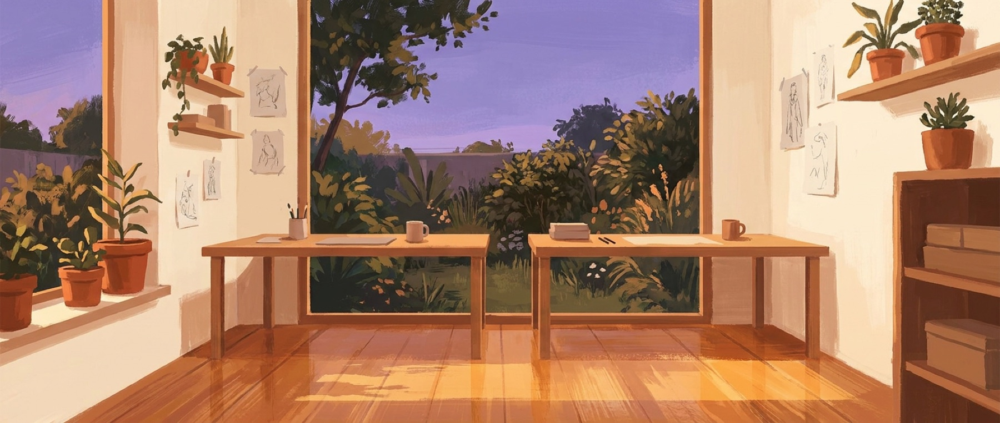

Enchant · The two of us
The studio we already are.
Between us: a decade designing the Gen AI products everyone else is still catching up to, and fifteen years taking health products from zero to revenue. This is the practice where two careers become one studio: a few great clients a year, built around our family, funding the products we believe in.
A draft for the two of us. Mark what resonates, change what doesn’t. It becomes the plan when we both say yes.
Why this works now
We’re free. For the first time in a decade, both crafts belong to us. Every health company’s board is asking for the AI answer, and in consumer health almost nobody selling them help has actually shipped Gen AI products at scale. We have. That intersection, health products, behavior design, and frontier AI, is nearly empty of credible people.
The buyers already exist. Funded health companies post-raise, under pressure to find their next growth engine, who can’t hire a founding-caliber team in time. Two of them tried to hire Paul outright this year. And it isn’t anecdote: more than half of 2025’s digital-health funding went to AI-enabled companies, and Fitt’s job board lists 48 open AI-titled roles across 23 funded health companies this week. The move is renting us as a pair: something nobody else can offer, because nobody else is us.
→ The receipts, if you want them
- “AI-enabled startups captured 54% of all US digital-health funding in 2025, up from 37% in 2024,” with a 61% valuation premium at Series C. Rock Health · Jan 2026
- Rock Health then retired its “AI deal” metric entirely this spring: “AI becomes table stakes in how digital health companies and their offerings are built and delivered.” Rock Health · Apr 2026
- Meanwhile only ~30% of completed gen-AI pilots ever reach production, and 41–52% of healthcare leaders name missing in-house AI expertise as a top barrier. Bessemer × AWS × Bain · 2025
- The census behind our number: 48 AI-titled leadership roles across 23 funded health companies on Fitt’s job board, counted by hand on June 11, 2026: Headspace’s “Director, AI Enablement,” Hello Heart’s “Senior AI Builder,” WHOOP hiring four AI roles at once, Komodo’s VP-of-AI search open since February. jobs.fitt.co
- “In the past, whether you invest in AI was a strategic choice. Right now, it’s just an imperative.” — Matthew Woo, co-founder of Summer Health. Out-of-Pocket podcast
- And the case for hiring outside help at all: external partners ship successful AI roughly twice as often as internal builds. MIT NANDA · 2025
And it protects the real bets. The practice is the cash engine; Kasane and Coplay stay the equity engine. Client work funds them, sharpens them, and feeds them. It never eats them.
What we sell
The front door
Product + AI Diagnostic
A two-week read of a company’s product, audience, and AI readiness. Small enough for an easy first yes; designed to grow into the flagship. One of us can run these solo while the other rests or builds.
The flagship
Growth Lab
An embedded founding-team pod: one growth bet, thesis to shipped product to first revenue. This is the one that needs us both, and the one that pays for the year.
The long game
AI-Native Operations
A standing retainer building a client’s internal AI systems. Steady, calm work that compounds, and a natural continuation after a flagship ends.
What one year looks like
Honest math, after taxes. Roughly a third of every dollar goes to federal, California, and self-employment tax, so the bars below show what actually lands each month, measured against the family breakeven line.
The floor
1 flagship + 2 diagnostics · ~10 weeks billed$222k gross ≈ $12k a month after taxes. A safe landing, and honestly short of the line: it covers about seven months of our year. The floor buys time; it doesn’t buy the year.
The target
2 flagships + 2 diagnostics · 16–24 weeks billed$372–472k gross ≈ $20–26k a month after taxes. This is the real breakeven year: it clears the line, with margin at the top of the range, still under a third of our working time.
The ceiling we won’t chase
3+ flagships, back to backMore money, and it eats the products, the family rhythm, and us. We don’t staff this year. That’s a promise, not a forecast.
The mark on each bar is the family breakeven line, after taxes. Gross figures use the public engagement prices; the tax rate is our blended 2025 effective rate across federal, California, and self-employment.
The promises
Rest comes first
Recovery is scheduled before revenue. We shape this together now; hands join when they’re ready, and the diagnostic can run solo until then. Nothing gets booked against rest.
One client at a time
Always. It protects the quality, the kids window, and the products. We say no to the second flagship until the first is done and we’ve had a product block.
The kids window is the trunk
Everything else branches around it. Utilization stays under a third of our time, by design, every scenario.
We can change this
A standing clause between us, reviewed at every CEO review. If it stops serving us, we redesign it or wind it down. No sunk-cost loyalty to a structure.
How we split the work
On a flagship we’re a pair, and each half is whole: strategy, AI build, and the sales motion on one side; design leadership, research synthesis, and the Gen AI craft almost nobody selling it actually has on the other.
And half the differentiation is simply that this pair exists. Clients can’t hire a Microsoft Gen AI principal designer or a serial health founder. For a season, they can rent both.

The first ninety days
Walk it together
The two of us, this plan, the pitch pages. We mark what resonates and what doesn’t, and pick the positioning that feels like us.
Weeks 1–2Open the doors
Personal notes to the warmest people in the network: past clients, fund partners, founders we already know. No blasts, ever.
Weeks 2–4First conversations
Take two or three pitch calls. Aim to close one diagnostic as the try-on project, for the client and for our working rhythm.
Weeks 4–8Harvest and decide
Run it, learn, then a checkpoint together: lean in, keep it light, or change the design. Rest and family carry the most weight in that call.
Weeks 8–12Enchant · Est. 2017 · Replanted 2026
A practice that funds the garden, and never becomes the weeds.
This is a draft of a life, not a contract. We read it, sit with it, and shape it until it’s ours.